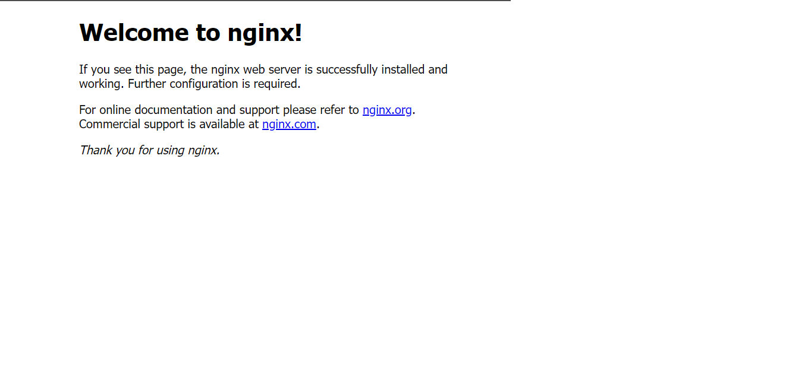
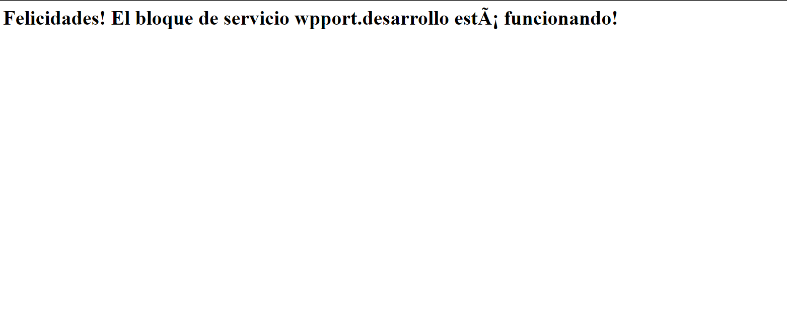

Instalar NGINX y configurar las reglas del firewall
1. Instalar NGINX
2. Ajustar el Firewall
Información
Procedimiento de instalación basado en estos enlaces
Antes de probar NGINX, el firewall necesita ser configurado para permitir el acceso al servicio.
Nginx se registra así mismo como un servicio con ufw durante la instalación, permitiendo de manera directa dar permisos de acceso a NGINX.
Vamos a listar las configuraciones de las aplicaciones para las que ufw sabe como funcionar, tecleamos:
Deberiamos ver una lista de perfiles de aplicación:
Activaremos ahora el perfil de acceso por el puerto80 y el 443:
La salida a este comando:
Verificamos el estado en el Firewall:
La salida:
Status: active
To Action From
-- ------ ----
Nginx Full ALLOW Anywhere
Nginx Full (v6) ALLOW Anywhere (v6)
Permitimos también las conexiones SSH entrantes:
3. Comprobar el servidor WEB
Si la salida es cómo esta
Ejecutaremos
Salida:
Vamos a verificar a través de un navegador:
Deberías ver una pantalla de bienvenida a NGINX

4. Comandos del servicio NGINX
Comandos útiles de NGINX
- Para detener el servicio:
- Para arrancar el servicio:
- Para reiniciar el servicio:
5. Configurar Server Blocks
Cuando se utiliza el servidor web NGINX, los service blocks (similares a los virtual hosts de Apache), pueden ser usados para encapsular detalles de configuración y host para más de un dominio en un solo servidor.
Ahora configuraremos un dominio denominado weppor.desarrollo para poder acceder posteriormente al sitio Plone 6 de PortalONCE
sudo mkdir -p /var/www/weppor.desarrollo/html
sudo chown -R $USER:$USER /var/www/weppor.desarrollo/html
sudo chmod -R 755 /var/www/weppor.desarrollo
Crearemos ahora una página HTML de ejemplo:
<html>
<head>
<title>Bienvenido a tu weppor.desarrollo!</title>
</head>
<body>
<h1>Felicidades! El bloque de servicio weppor.desarrollo está funcionando!</h1>
</body>
</html>
Para que NGINX pueda servir este contenido, será necesario crear un server block con las directivas adecuadas. En vez de modificar la configuración por defecto directamente, crearemos una nueva en /etc/nginx/sites-available/weppor.desarrollo:
server {
listen 80;
listen [::]:80;
root /var/www/weppor.desarrollo/html;
index index.html index.htm index.nginx-debian.html;
server_name weppor.desarrollo www.weppor.desarrollo;
location / {
try_files $uri $uri/ =404;
}
}
sites-enabled, que es de donde NGINX obtiene los sitios en su arranque_
Verificamos que todo esté correcto en la configuración:
nginx: the configuration file /etc/nginx/nginx.conf syntax is ok
nginx: configuration file /etc/nginx/nginx.conf test is successful
Y reiniciamos el servicio
Primeramente, hay que añadir nuestro dominioweppor.desarrollo al archivo hosts
Asegúrate de no tenerlo definido para otro dominio. Si es así, puedes añadir este dominio separandolo por comas:
Por último, con el navegador accede a http://weppor.desarrollo, deberías ver la página de prueba que creamos anteriormente.

Volveremos a la configuración Nginx
En capítulos siguientes volveremos a esta configuración para redirigir el dominio al sitio Plone